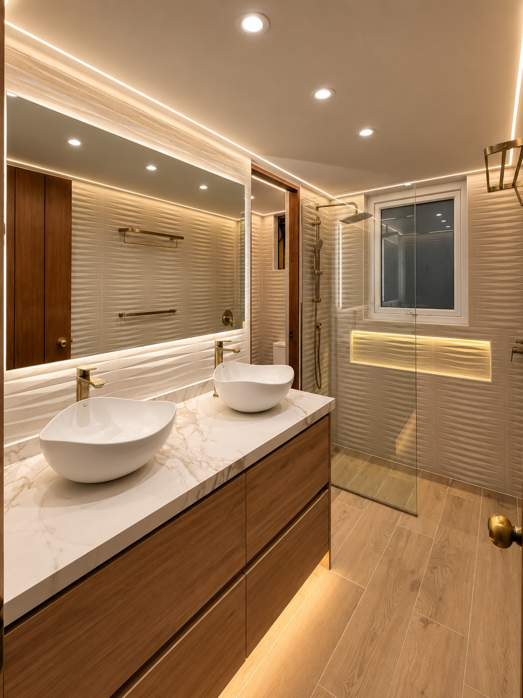
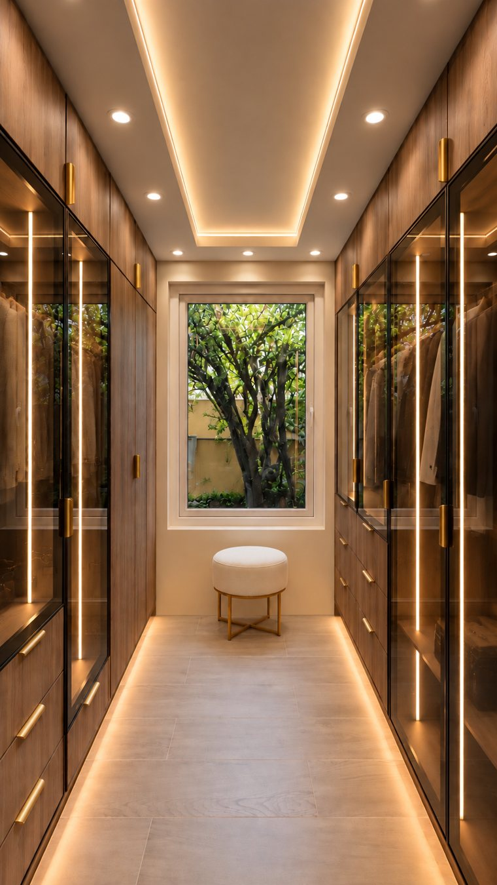
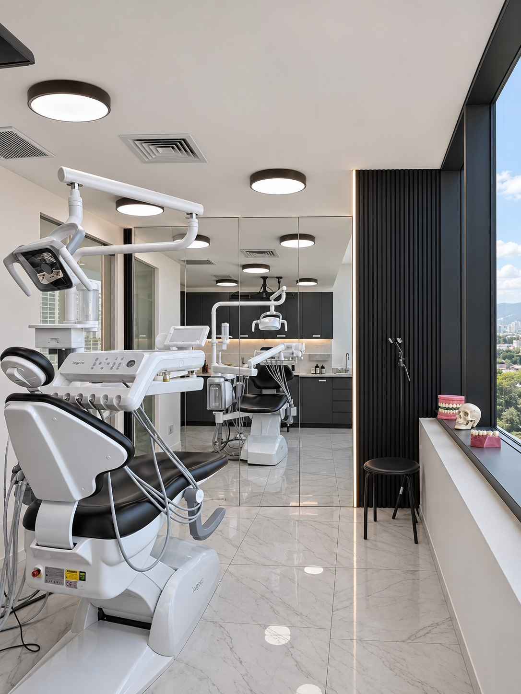
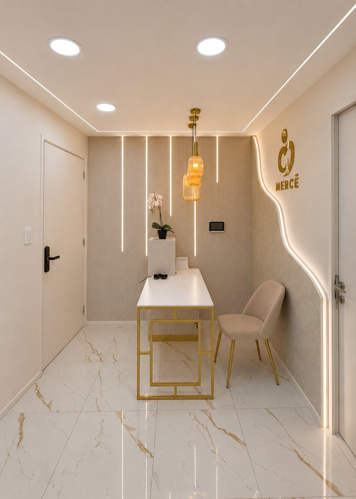
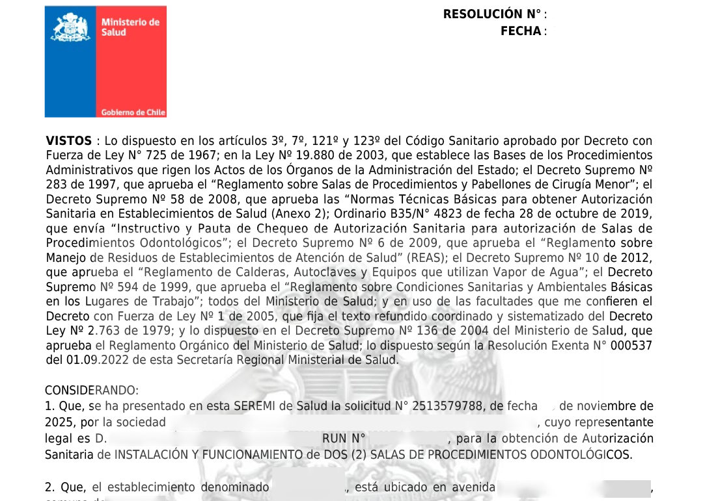
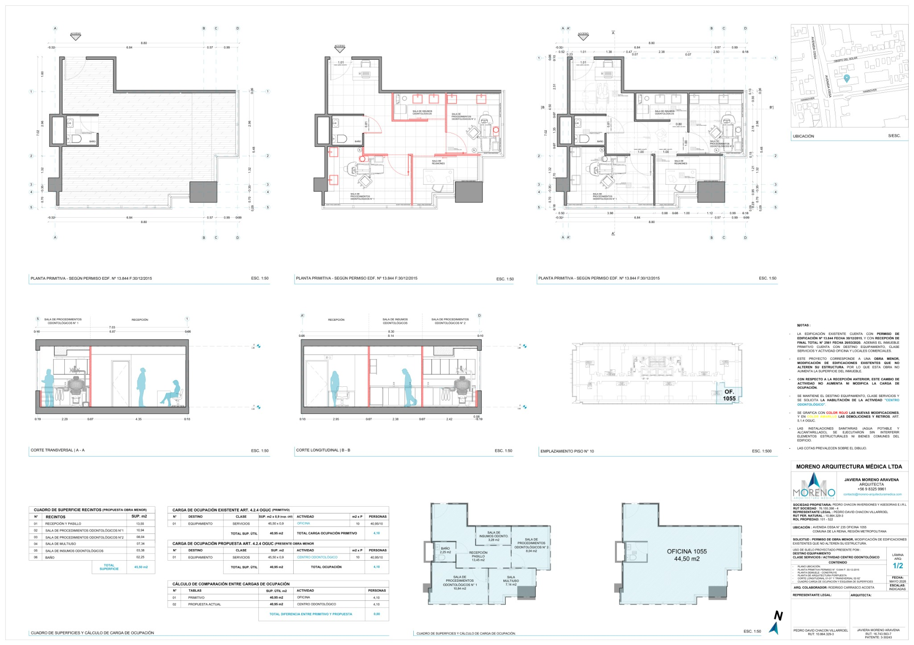
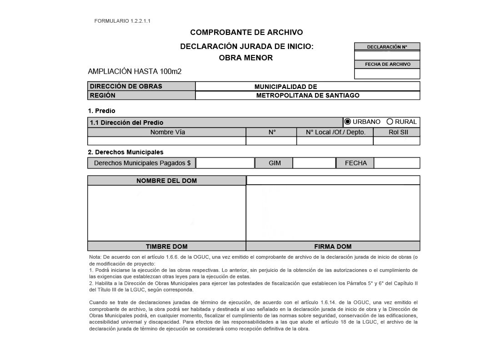
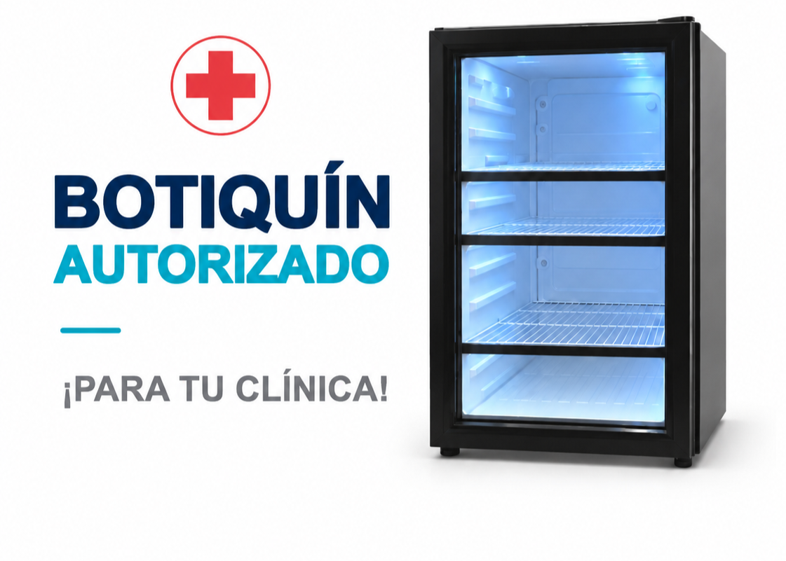
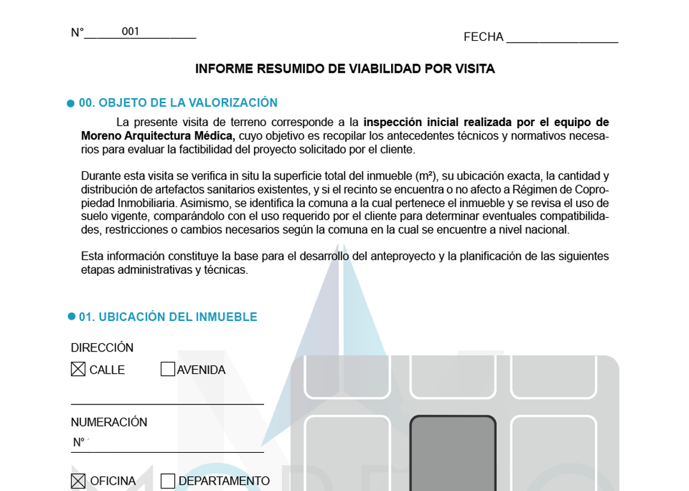
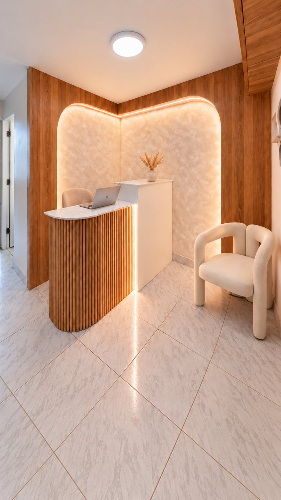

DISEÑO Y
ARQUITECTURA
Desarrollamos proyectos a la medida, innovadores y funcionales.
DISEÑAMOS, CONSTRUIMOS Y
HACEMOS REALIDAD
En Moreno Grupo integramos diseño, construcción y ejecución para entregar soluciones de calidad, funcionales y con altos estándares técnicos.
SOBRE MORENO GRUPO
Moreno Grupo integra a Moreno Arquitectura Médica y Moreno Construcciones, empresas lideradas por la arquitecta chilena Javiera Moreno Aravena, que comparten una visión integral de la arquitectura, el diseño y la construcción.
Nos especializamos en la planificación, el diseño técnico y la ejecución de proyectos de infraestructura privada, con especial énfasis en establecimientos de salud y proyectos habitacionales.
Nuestra propuesta combina creatividad, experiencia técnica y compromiso, acompañando cada proyecto desde su concepción hasta su materialización, con soluciones funcionales, innovadoras y adaptadas a las necesidades de cada cliente.
CONOCE MÁSNUESTROS SERVICIOS

Desarrollamos proyectos a la medida, innovadores y funcionales.

Ejecutamos obras con altos estándares de calidad, seguridad y eficiencia.

Diseño y habilitación de espacios de salud bajo normativa vigente.

Acompañamos cada etapa del proyecto hasta su entrega final.
¿POR QUÉ ELEGIRNOS?
MORENO ARQUITECTURA MÉDICA
Soluciones integrales en permisos, arquitectura, diseño y desarrollo de proyectos, con especialización en establecimientos de atención de salud.
Nos especializamos en la tramitación de autorizaciones sanitarias ante la SEREMI de Salud, autorizaciones de botiquines ante el ISP o SEREMI, Permisos de Obra Menor, Recepciones Definitivas y demás gestiones municipales necesarias para la habilitación y regularización de establecimientos de salud.
Diseñamos clínicas, centros médicos, consultas especializadas, salas de procedimientos y otros espacios destinados a la atención de salud. Desarrollamos soluciones arquitectónicas que integran funcionalidad, estética y las necesidades de cada cliente, considerando las exigencias normativas municipales y sanitarias.
Evaluamos la factibilidad técnica, arquitectónica y normativa de inmuebles destinados a nuevos proyectos. Asesoramos a nuestros clientes en la toma de decisiones, identificando requisitos, restricciones y alternativas de solución para desarrollar sus proyectos de manera eficiente y planificada.
Desarrollamos proyectos de arquitectura y construcción para espacios de salud, comerciales y habitacionales. A través de Moreno Construcciones, abordamos la ejecución de obras, selección de materialidades, coordinación de especialidades y supervisión técnica, cuidando la calidad constructiva y las terminaciones de cada proyecto.
Contamos con profesionales especializados en ingeniería eléctrica, proyectos sanitarios de agua potable y alcantarillado, climatización y ventilación, entre otras especialidades. Coordinamos estas instalaciones con el proyecto arquitectónico, asegurando soluciones funcionales y acordes con los requerimientos técnicos y normativos.
MORENO ARQUITECTURA MÉDICA
Servicios especializados para evaluar, habilitar y regularizar tu proyecto, con acompañamiento técnico durante cada etapa.

Asesoría técnica y gestión de autorizaciones sanitarias para establecimientos de atención de salud.
Es una autorización otorgada por la SEREMI de Salud que permite el funcionamiento de determinados establecimientos y salas de procedimientos de salud, previa verificación del cumplimiento de las exigencias sanitarias aplicables a sus instalaciones, equipamiento, personal y prestaciones.
Permite desarrollar las actividades y prestaciones de salud autorizadas por la autoridad sanitaria, en establecimientos médicos, odontológicos, kinesiológicos, ginecológicos, oftalmológicos y otras especialidades, según las características y requerimientos de cada recinto.
Ofrecemos un servicio integral de asesoría técnica y tramitación de autorizaciones sanitarias ante la SEREMI de Salud. Nuestro trabajo comprende la evaluación de los recintos, revisión de requisitos normativos, preparación de documentación y planimetría, ingreso de solicitudes, seguimiento del trámite y gestión de observaciones durante el proceso de revisión y fiscalización.
Acompañamos a nuestros clientes durante las distintas etapas del procedimiento, orientándolos en el cumplimiento de las exigencias sanitarias aplicables a su establecimiento.

Permisos municipales, regularizaciones y antecedentes técnicos
El Permiso de Obra Menor o de Edificación es la autorización que entrega la Dirección de Obras Municipales (DOM) para ejecutar construcciones, ampliaciones o modificaciones, según las características del proyecto y la normativa aplicable.
La Recepción Definitiva es el documento mediante el cual la DOM recibe formalmente las obras terminadas, conforme al permiso y los antecedentes aprobados.
Estos trámites, junto con el cambio de destino cuando corresponda, permiten respaldar municipalmente la habilitación de inmuebles para clínicas, consultas dentales, consultas médicas, centros odontológicos, locales comerciales y viviendas unifamiliares. El destino solicitado debe ser compatible con el uso de suelo permitido por la normativa urbanística del sector.
El TE1 es el certificado de inscripción de una instalación eléctrica interior ante la Superintendencia de Electricidad y Combustibles (SEC). Mediante esta declaración, un profesional autorizado declara que la instalación fue ejecutada conforme a la normativa correspondiente. Su inscripción no constituye una aprobación de la instalación por parte de la SEC.
El Certificado de Agua Potable y Alcantarillado acredita la dotación de estos servicios y la recepción conforme de las conexiones del inmueble a las redes de la empresa sanitaria. Su alcance no equivale a una certificación de todas las instalaciones interiores, cuya responsabilidad corresponde a los profesionales y contratistas respectivos.
El Certificado TE1 acredita que la instalación eléctrica fue declarada ante la SEC por un profesional autorizado, quien declara que fue ejecutada conforme a la normativa aplicable.
El Certificado de Agua Potable y Alcantarillado acredita que el inmueble cuenta con dotación de agua potable y conexión a la red de alcantarillado, con la recepción conforme de la empresa sanitaria correspondiente.
Ambos documentos respaldan ante la DOM los antecedentes eléctricos y sanitarios del proyecto y, cuando son exigibles según las obras y el procedimiento aplicable, son necesarios para completar el expediente y obtener la Recepción Definitiva.
Se logra que las construcciones, ampliaciones o modificaciones incluidas en el trámite cuenten con respaldo municipal y que el destino del inmueble quede formalizado mediante el procedimiento correspondiente.
Esto permite ordenar los antecedentes de la propiedad, acreditar las obras aprobadas y avanzar en otras gestiones, como solicitudes de Patente Comercial.
La evaluación puede realizarse para clínicas, consultas dentales y médicas, centros odontológicos, locales comerciales y viviendas unifamiliares, incluyendo inmuebles ya construidos que se quieran adaptar o destinar a una nueva actividad.
La regularización no modifica por sí sola el uso de suelo permitido: primero se debe verificar que la actividad propuesta sea admisible en esa ubicación.
Evaluamos la viabilidad de tu inmueble y gestionamos los antecedentes y trámites necesarios para su habilitación o regularización municipal, según las características del proyecto.
Evaluamos inmuebles para nuevos proyectos y construcciones existentes: clínicas, consultas dentales y médicas, centros odontológicos, locales comerciales y viviendas unifamiliares.

Asesoría técnica y tramitación de declaraciones juradas ante la Dirección de Obras Municipales (DOM).
Es un procedimiento municipal que permite habilitar la ejecución de determinadas obras de construcción, ampliación o modificación, mediante la presentación y archivo de una declaración jurada junto con los antecedentes técnicos exigidos. Este mecanismo reemplaza la solicitud de permiso tradicional en los casos establecidos por la normativa vigente.
La Declaración Jurada de Inicio permite ejecutar las obras contempladas en el proyecto una vez emitido el comprobante de archivo municipal. Posteriormente, la Declaración Jurada de Término de Ejecución permite acreditar que las obras fueron ejecutadas conforme a los antecedentes presentados, cumpliendo una función equivalente a la Recepción Definitiva en los casos establecidos por la normativa.
Ofrecemos asesoría técnica y gestión de ambas declaraciones ante la Dirección de Obras Municipales. Nuestro servicio comprende la evaluación normativa del proyecto, levantamiento y desarrollo de planimetría, preparación de documentación técnica, ingreso de antecedentes y seguimiento de la tramitación municipal, acompañando a nuestros clientes durante las distintas etapas del procedimiento.

Gestión técnica y autorización ante el ISP
Un botiquín es un espacio habilitado dentro de un establecimiento de salud para almacenar, conservar y disponer de los medicamentos necesarios para sus actividades clínicas. Su funcionamiento requiere autorización sanitaria y cuenta con una persona responsable de la adquisición, tenencia y manejo de los productos incluidos en el listado aprobado.
Se obtiene la autorización para el funcionamiento del botiquín dentro del establecimiento, conforme a un plano y un listado específico de medicamentos. Esto permite disponer de los productos autorizados bajo condiciones adecuadas de almacenamiento, conservación y control, incluyendo cadena de frío cuando corresponda.
La aprobación establece las responsabilidades sobre su manejo y los registros que deben mantenerse, contribuyendo a la seguridad y organización de la atención. Su alcance corresponde al botiquín y a los medicamentos aprobados; la autorización de los procedimientos clínicos se tramita según corresponda.
Ofrecemos asesoría técnica y gestión del proceso de autorización del botiquín, acompañando al cliente desde la evaluación del espacio hasta la obtención de la resolución correspondiente.
Nuestro servicio contempla la elaboración del plano, orientación sobre mobiliario, equipamiento y condiciones de conservación, preparación de antecedentes en coordinación con el profesional responsable, ingreso y seguimiento de la solicitud ante el Instituto de Salud Pública (ISP), y apoyo en la respuesta a observaciones.
Buscamos que cada establecimiento cuente con un botiquín organizado, adecuado a sus necesidades clínicas y conforme a las exigencias de la autoridad sanitaria.

Evalúa tu inmueble antes de comprar, arrendar o remodelar
Es una evaluación preliminar que, mediante una visita a terreno y la revisión de antecedentes, analiza si un inmueble reúne las condiciones técnicas, normativas y funcionales para desarrollar el proyecto que tienes en mente.
Permite conocer las posibilidades y limitaciones del inmueble antes de comprar, arrendar o remodelar. Identifica adecuaciones necesarias, posibles restricciones y trámites a considerar, entregándote una base para tomar decisiones informadas y planificar tu inversión.
Realizamos una visita técnica y un análisis orientado a las necesidades de tu proyecto, que considera:
Este servicio permite evaluar viviendas, oficinas, locales comerciales y clínicas o centros dentales y médicos ya construidos, ya sea para su adquisición, arriendo, remodelación o habilitación.
El informe entrega una orientación preliminar, sujeta a los antecedentes disponibles y a las verificaciones de especialidades y aprobaciones que correspondan.

NUESTRAS EMPRESAS
Firma especializada en la formulación y desarrollo de proyectos de infraestructura privada de salud, abordando el diseño conceptual, la distribución y planificación de espacios de atención médica, el cumplimiento de normativas sanitarias y municipales, y la gestión de permisos y regularizaciones ante los organismos correspondientes.
De manera complementaria, desarrollamos proyectos de arquitectura habitacional, una línea surgida de forma natural a partir de la relación de confianza construida con nuestros clientes, quienes también nos confían el diseño y mejoramiento de sus espacios familiares y cotidianos.
VISITAR INSTAGRAMConstruimos espacios que transforman proyectos en realidad.
Somos una empresa especializada en la ejecución de obras, remodelaciones y habilitación de espacios, con un enfoque en infraestructura de salud, recintos comerciales y proyectos habitacionales.
Contamos con un equipo de construcción y maestros especializados, trabajando en coordinación con profesionales de arquitectura e ingeniería para garantizar obras de calidad, funcionales y adaptadas a las necesidades de cada cliente.
VISITAR INSTAGRAMMORENO GRUPO · SOBRE NOSOTROS
Una historia que comenzó en familia y hoy acompaña los sueños de nuestros clientes.